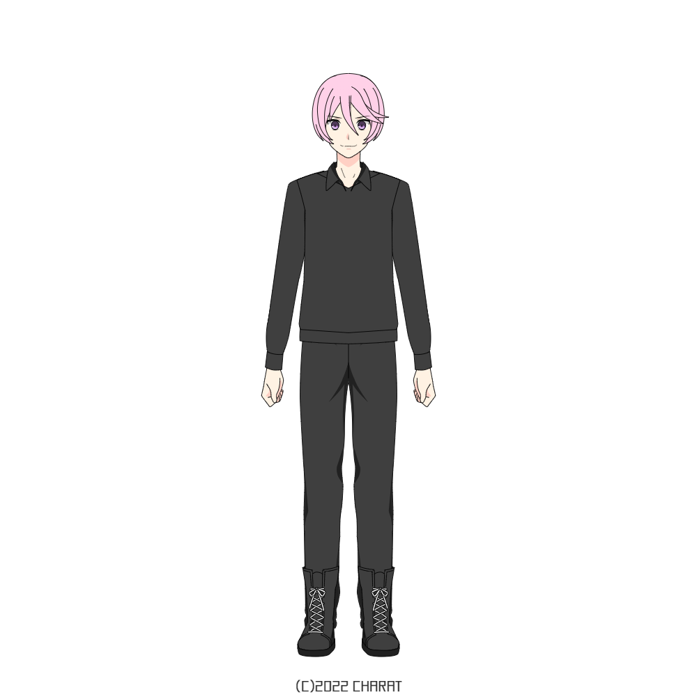
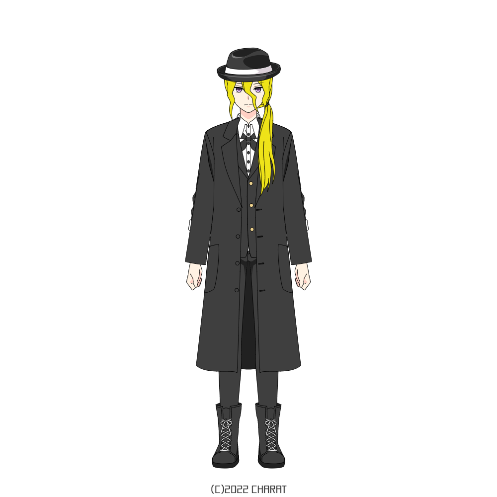
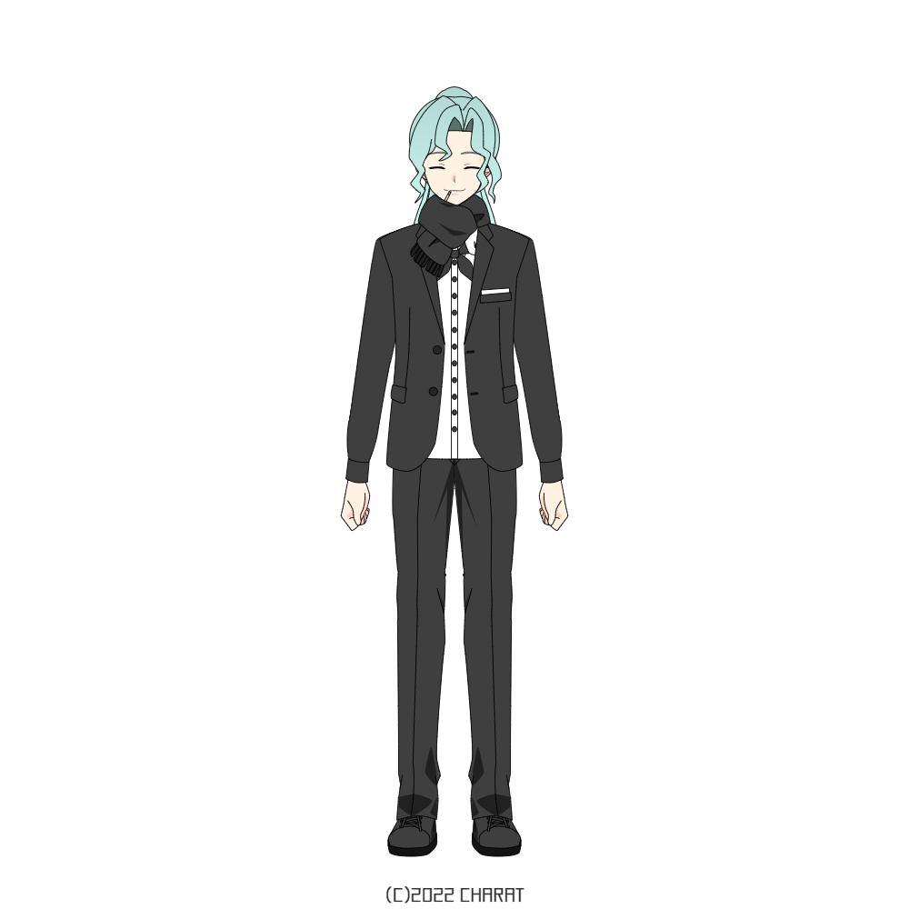
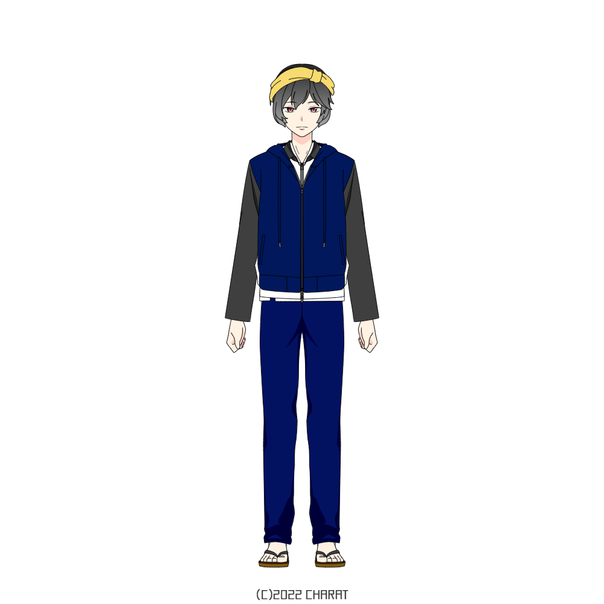
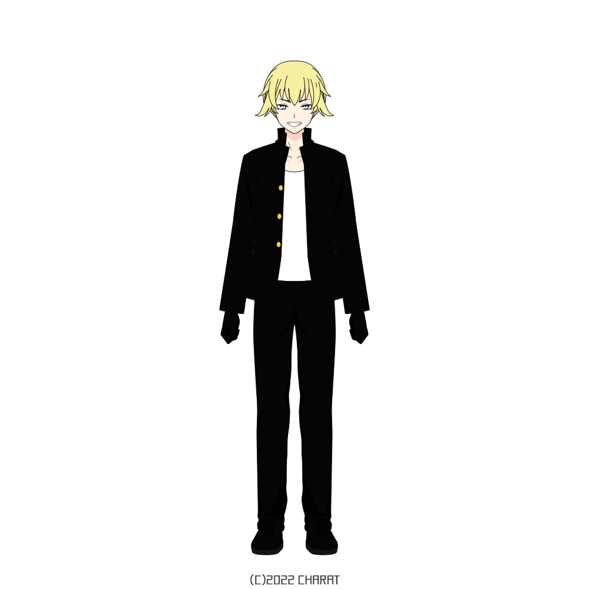

ビッキー（伊達美鬼斗）

身長 181.5cm
体重 77.2kg
年齢 21歳
出身地 上野
誕生日 ５月９日
長所 強いこと
短所 物事を忘れやすいこと
好きなもの 大豆を使った物 ＧＭ9
嫌いなもの 理不尽な悪人
座右の銘 やるしかないならやるだけだ
魔法属性 雷
能力 悪鬼羅刹
レジスタンス組織『閃光師団』師団長。
元々は東京統括組織『天雷（てんらい）』の大将幹部で、アトラス隊の隊長を務めていた。
彼女であるＧＭ9（ヴィオラ・クライス）を「ある事件」で失い、傷心のまま離職。
その後、『天雷』組織長武本源五郎と『天雷』を倒すとして『閃光師団』を作った。
その後、彼女との思い出の地横浜に行き、江戸川乱歩より『真実』を伝えられる。
ギーク（中原有馬）

身長 160.5cm
体重 60.0kg
年齢 21歳
出身地 上野
誕生日 １月３０日
長所 親父より身長が高い事
短所 人の気持ちに気付きにくい事、太宰じいさんの娘にいつまで経っても勝てないこと
好きなもの 帽子、喧嘩、酒、音楽
嫌いなもの 太宰優子
座右の銘 これでヤツがいなければ
魔法属性 引力
能力 汚れつちまつた悲しみに…
レジスタンス組織『閃光師団』師団員。
元々は東京統括組織『天雷（てんらい）』の中将幹部で、アトラス隊の隊員。
ビッキーと共に離職、『閃光師団』に入る。
協力者を募るため各地を回り、『騎兵隊』のアジト兼飛空艇の『リンドブルム』を訪れる。
たにけい（谷崎圭一郎）

身長 165.2cm
体重 58.5kg
年齢 20歳
出身地 横浜
誕生日 ８月４日
長所 人を助ける力がある事
短所 それを活用できない立場である事
好きな物 人の笑顔、”あの人”、兄
嫌いな物 理不尽な悪を裁けなかった自分
座右の銘 誰が赦しても、オレはオレを赦さない
魔法属性 影
能力 細雪
東京統括組織『天雷（てんらい）』アトラス隊福隊長。
ビッキ―たちが離職した後、「極秘任務」から帰ってきた。
ビッキ―たちに魔力（マナ）や異界魔法について教える。
ファマス（夢野・ファマス・カッツロイ）

身長 181.2cm
体重 78.2kg
年齢 24歳
出身地 千葉
誕生日 ２月１３日
長所 建築
短所 面倒臭がり
好きな物 酒、銃、つぶ貝
嫌いな物 特になし
座右の銘 何があってもプライドは捨てるな
魔法属性 炎
能力 『建築一筋』
武本源五郎の元で専属建築家として働いていたが、
ビッキ―の離職から１年程前に東京を脱出。
その後『騎兵隊』に入り、横浜にてビッキ―と合流する。
天王州統括組織『鶴翼』組織長つぶ貝（夢野鶴貝）を妻に持つ
まちゃかり（マチルダ・ヴィリアース）

身長 200.0cm
体重 86.2kg
年齢 21歳
出身地 天王州
誕生日 3月16日
長所 信念を捻じ曲げない強さ
短所 特にねぇな
好きな物 仲間
嫌いな物 悪い奴とモンスター
座右の銘 ヒーローは必ず勝つ！
魔法属性 氷
能力 不明
『騎兵隊』リーダー。
ビッキ―の離職から２年前、離職して『騎兵隊』を設立した。
「事件」の事に対して憤りを覚えている。
ビッキ―の親戚で、古くからの知り合いである。
トップ